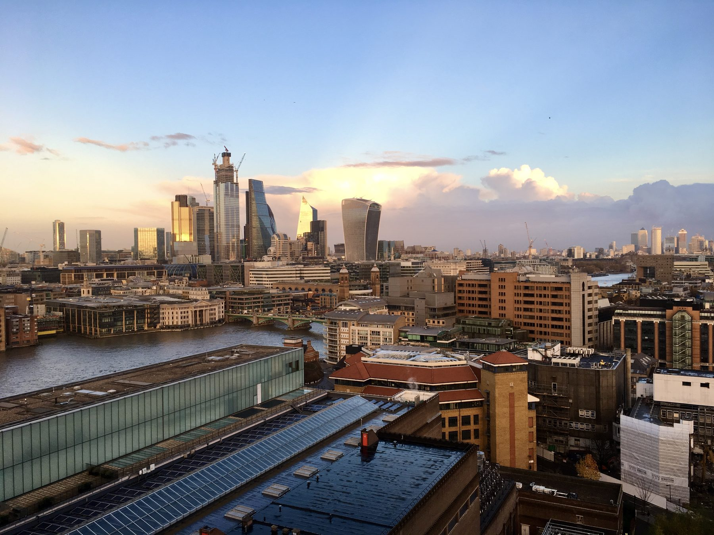

Sehenswürdigkeiten, Ausgehen, Tagsüber, Ausflüge. Öffnungszeiten und Preise ändern sich schnell — vor dem Losgehen den Maps-Link checken.
Sights, going out, daytime, day trips. Opening hours and prices change fast — check the Maps link before heading out.
Stand: Juli 2026 • gut zu wissen ↓
Last updated: July 2026 • good to know ↓
Das Gratisheft, das es früher mittwochs in der Underground gab, ist Geschichte: Nach 54 Jahren wurde die Londoner Printausgabe am 23. Juni 2022 zum letzten Mal verteilt. Time Out erscheint seitdem nur noch online — Listings, Restaurantkritiken und Veranstaltungen laufen über die Website und den Newsletter.
The free magazine handed out in the Underground on Wednesdays is gone: after 54 years the London print edition was distributed for the last time on 23 June 2022. Time Out has been online-only since — listings, restaurant reviews and events all run through the website and newsletter.
Topjaw für Restaurant-Empfehlungen: zwei Londoner, die Leute nach ihren Lieblingsläden fragen und daraus kurze Videos machen. Verlässlicher als die meisten Listicles.
Topjaw for restaurant recommendations: two Londoners who ask people for their favourite spots and turn it into short videos. More reliable than most listicles.
Kontaktlose Kredit-/Debitkarte oder Handy funktioniert überall dort, wo Oyster funktioniert — eine eigene Oyster Card braucht man als Besucher nicht mehr. Einfach ein- und auschecken, das Tages- und Wochenlimit greift automatisch.
Achtung beim Boot: Oyster/kontaktlos gilt nur bei Uber Boat by Thames Clippers (westlich bis Putney). Die saisonalen Boote nach Kew, Richmond und Hampton Court sind ein anderer Betreiber mit eigenen Tickets — und das TfL-Tageslimit gilt auf dem Wasser generell nicht.
A contactless credit/debit card or phone works everywhere Oyster does — as a visitor you no longer need an actual Oyster card. Just touch in and out; daily and weekly capping applies automatically.
Careful with boats: Oyster/contactless only works on Uber Boat by Thames Clippers (west as far as Putney). The seasonal boats to Kew, Richmond and Hampton Court are a different operator with their own tickets — and the TfL daily cap never applies on the river.